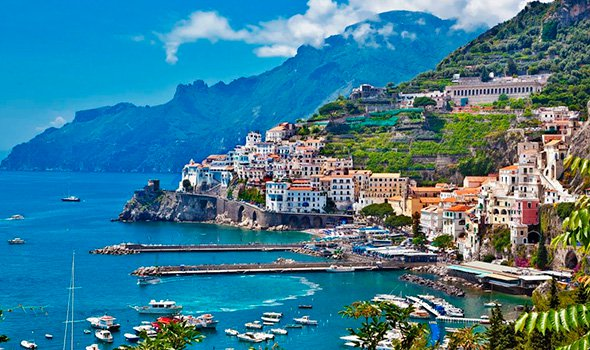

Меню |
Туристическое агенство |
|
|
|
Италия |
Пицца, Пизанская башня, Фонтан Треви, полуостров в форме сапога…
Италия - это рай!
Километры самых разнообразных, диких и обустроенных, пляжей; густые леса и прозрачные озера, неотличимые от швейцарских; альпийские горнолыжные курорты; острова с вулканами, термальные источники и, конечно, безумное количество исторических и культурных достопримечательностей.
|
|
Испания |
Каталония, Барселона, Севилья...
Испания - это страна контрастов
Километры самых разнообразных, диких и обустроенных, пляжей; густые леса и прозрачные озера, неотличимые от швейцарских; альпийские горнолыжные курорты; острова с вулканами, термальные источники и, конечно, безумное количество исторических и культурных достопримечательностей.
|
|
Мальдивы |
Cюда приезжают влюбленные со всего света, будь то молодожены или семья, отпраздновавшая золотую свадьбу.
Мальдивы - это удивительный пример того, как можно жить в гармонии с природой, не разрушая, а лишь дополняя окружающие пейзажи.
Это атмосфера романтики, неги и единения с окружающим миром.
|